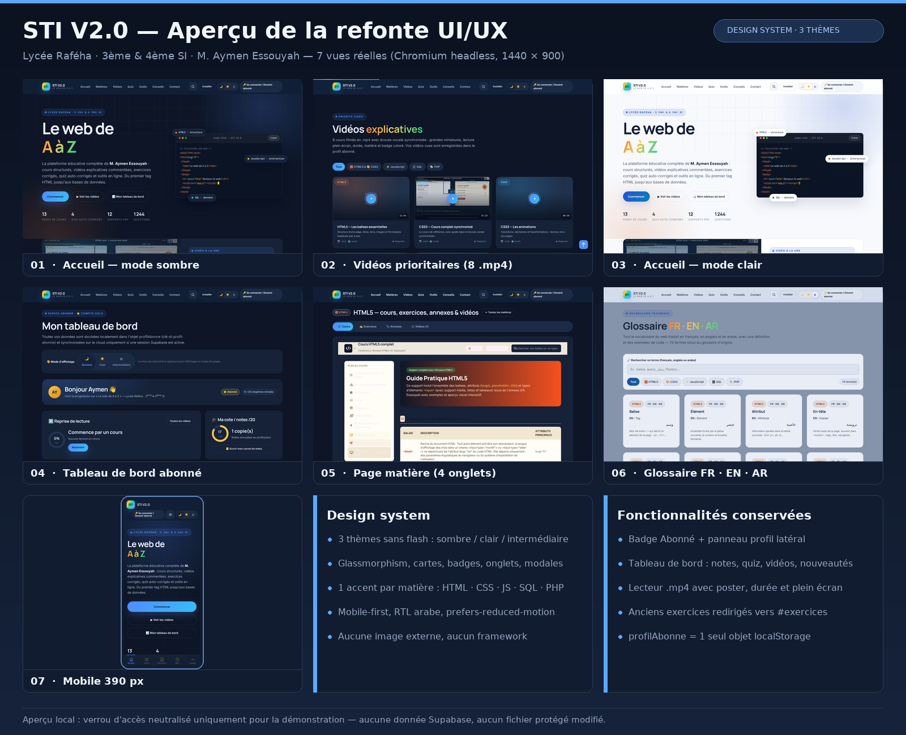
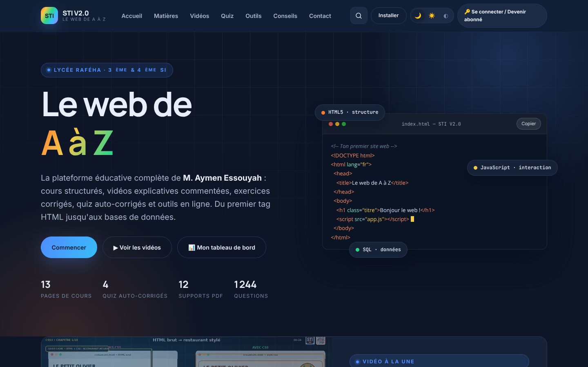
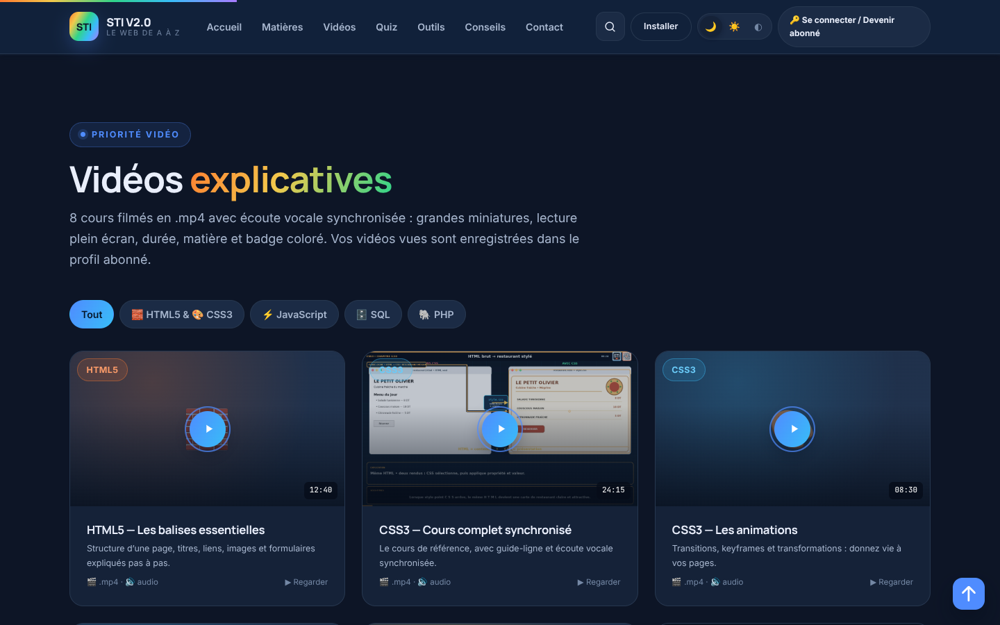
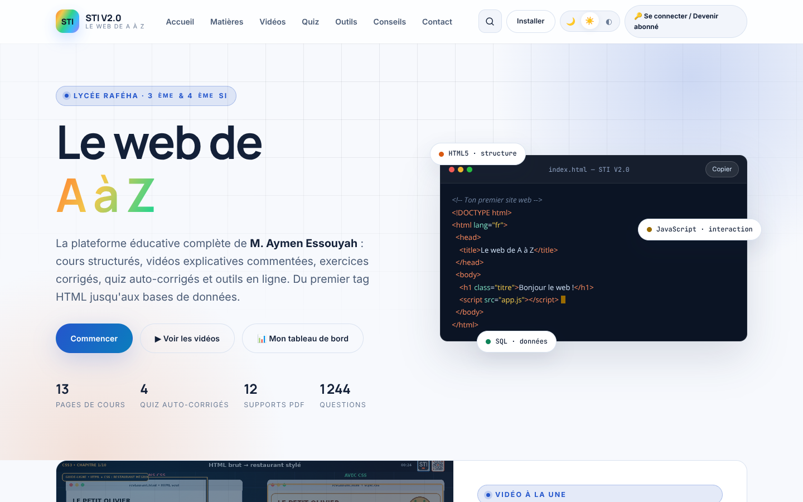
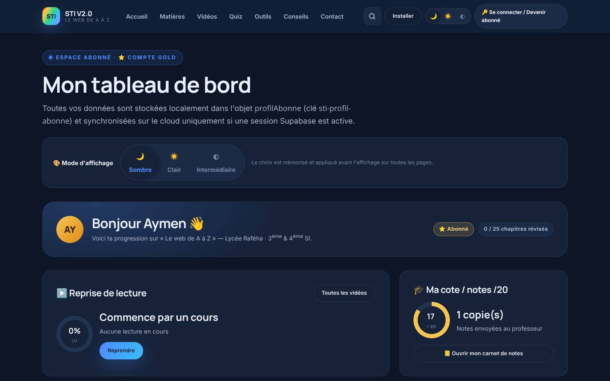
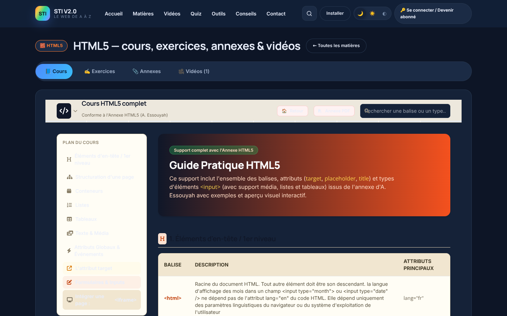
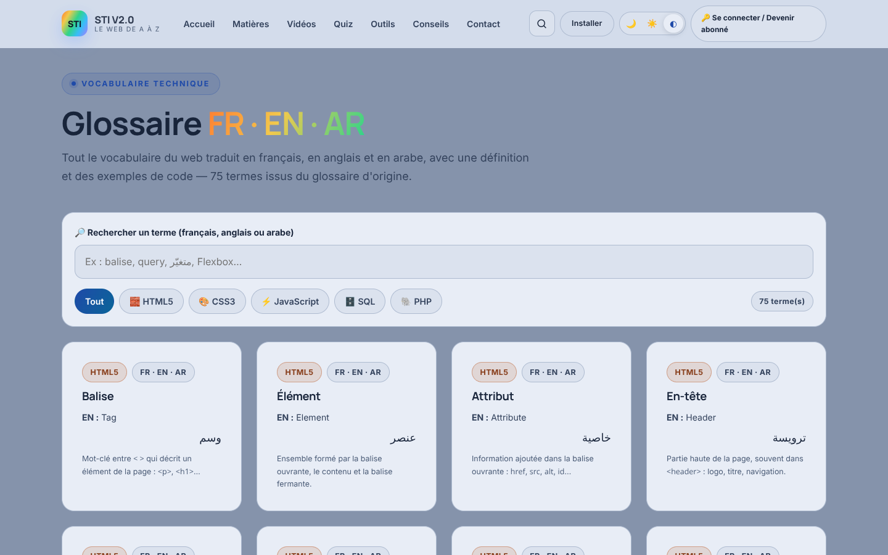
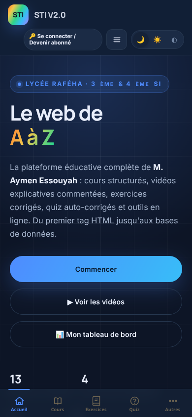

Vue d'ensemble
Accueil, vidéos, mode clair, tableau de bord, page matière, glossaire trilingue et mobile.

Captures détaillées
Cliquez sur une image pour l'ouvrir en taille réelle.














Ce que montre l'aperçu
3 thèmes sans flashSombre, clair et intermédiaire, mémorisés dans
profilAbonne.Un accent par matièreHTML orange · CSS bleu · JS jaune · SQL vert · PHP violet.
Vidéos au premier planVidéo à la une, grille filtrable, lecteur modal .mp4.
AccessibilitéMobile-first, RTL arabe, réduction des animations, focus visible.